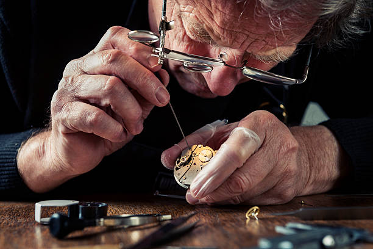

Relojería en San Rafael, Mendoza, Argentina
Nuestra relojería ha sido un referente en San Rafael, Mendoza, durante más de 30 años. Fundada en 1990 por Juan Pérez, un apasionado relojero local, la tienda ha crecido para convertirse en un destino para los amantes de los relojes en la región.
Nos enorgullecemos de ofrecer una amplia selección de marcas y modelos de relojes, desde marcas internacionales de renombre hasta piezas artesanales de fabricantes locales. Nuestro equipo de relojeros expertos brinda servicios de reparación y mantenimiento para asegurar que tus relojes se mantengan en perfecto estado a lo largo del tiempo.
Estamos ubicados en el corazón de San Rafael y contamos con un equipo cálido y amable de expertos en relojes listos para asesorarte en tu búsqueda del reloj perfecto. Ya sea que estés buscando un reloj elegante para ocasiones especiales o un reloj deportivo para tu vida activa, ¡tenemos algo para todos los gustos y estilos!
